Mercedes-Benz VS BMW

Вечное противостояние: Mercedes-Benz vs BMW
Конкуренция между Mercedes-Benz и BMW — одна из самых известных в автомобильной индустрии. Это соперничество берет начало еще в первой половине XX века, но особенно обострилось во второй половине столетия, когда обе компании начали активно конкурировать в премиальном сегменте.
Истоки противостояния
Mercedes-Benz, основанный в 1926 году после слияния компаний Daimler-Motoren-Gesellschaft (DMG) и Benz & Cie, изначально позиционировался как производитель роскошных автомобилей. BMW же начинала как производитель авиационных двигателей и мотоциклов, а в 1930-х годах перешла к выпуску автомобилей.
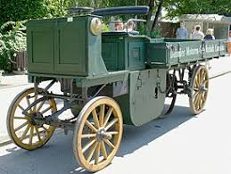 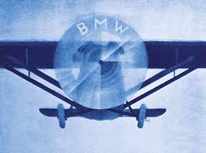До Второй мировой войны BMW не представляла серьезной угрозы для Mercedes-Benz, так как выпускала в основном небольшие и средние автомобили. Однако после войны BMW стремительно развивалась, и в 1960-х годах компания перешла в премиальный сегмент, что стало началом открытой конкурентной борьбы с Mercedes.
1960-е – 1980-е: борьба за премиум-класс
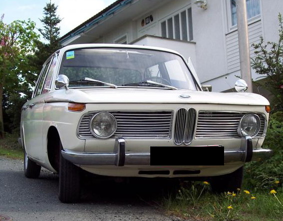В 1961 году BMW выпустила серию Neue Klasse (1500, 1600, 1800, 2000), которая заложила основу для спортивных седанов бренда. Автомобили отличались хорошей управляемостью и динамикой, что привлекло клиентов, желающих чего-то более "драйверского", чем традиционные Mercedes.
Mercedes-Benz S-Class vs BMW 7 Series
 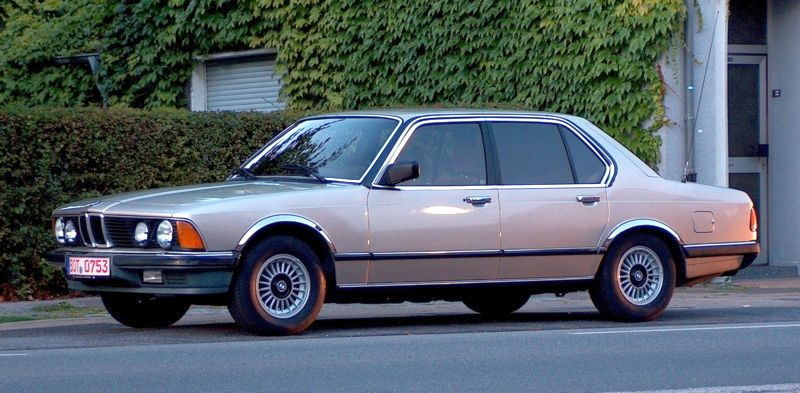
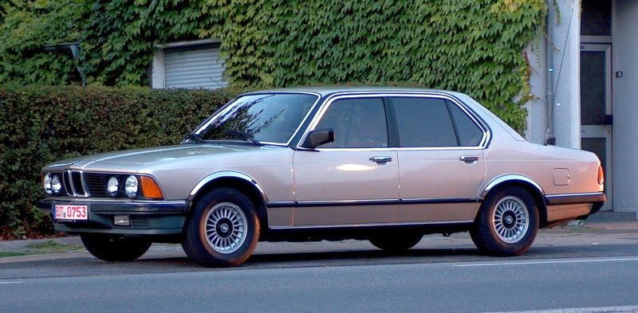
В 1972 году Mercedes-Benz представил S-Class (W116), который установил стандарты для роскошных седанов. В ответ BMW в 1977 году запустила 7 Series (E23), предложив более спортивный характер, но при этом сохранив комфорт.
Mercedes-Benz 190 (W201) vs BMW 3 Series
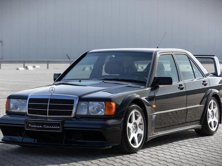 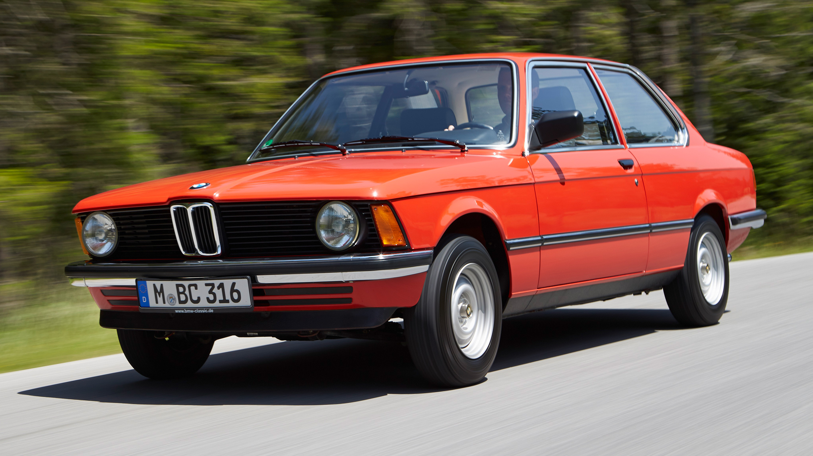BMW представила 3 Series (E21) в 1975 году, заложив основу для класса спортивных компактных седанов. Mercedes-Benz ответил только в 1982 году, выпустив 190 (W201), первый компактный седан компании, который получил прозвище "Baby Benz".
1990-е – 2000-е: эра технологий и маркетинга
Расширение модельного ряда
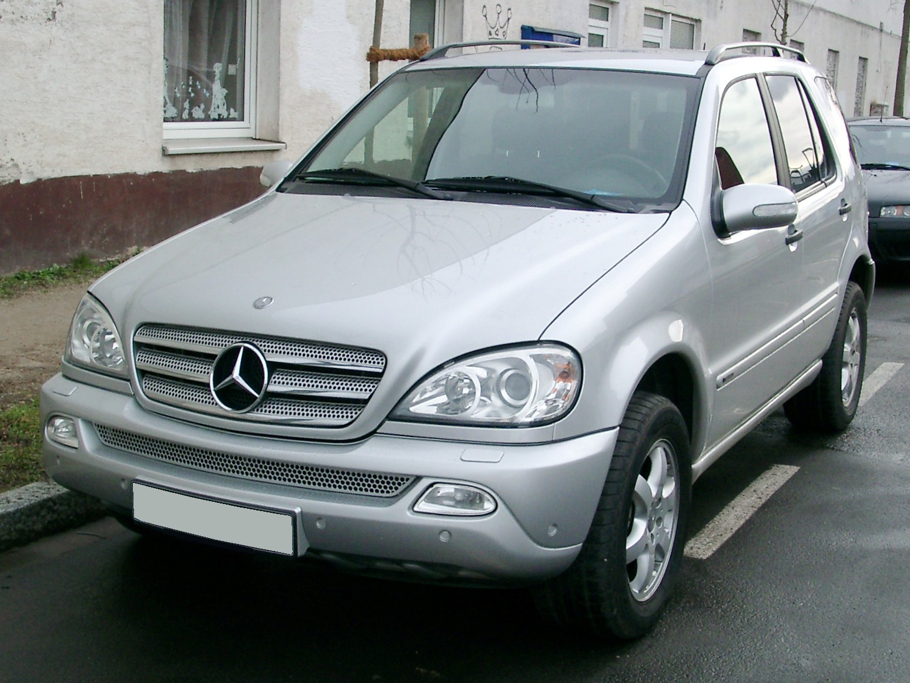
Конкуренция стала еще жестче в 1990-е, когда обе компании расширили линейки моделей. BMW представила X5 (E53), что стало началом эры премиальных кроссоверов. Mercedes-Benz ответил в 1997 году своим первым M-Class (W163).
BMW M vs Mercedes-AMG
BMW создала культовые M-модели (M3, M5 и другие), ориентированные на спорт, а Mercedes-Benz ответил развитием AMG, выпустив легендарные C43 AMG, E55 AMG и другие мощные версии своих моделей.
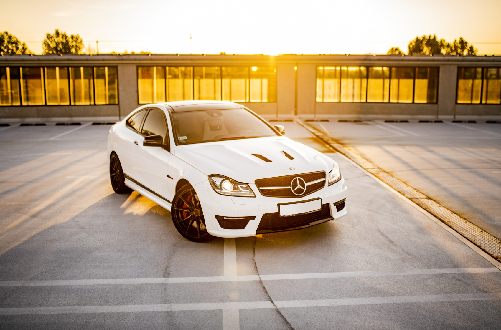 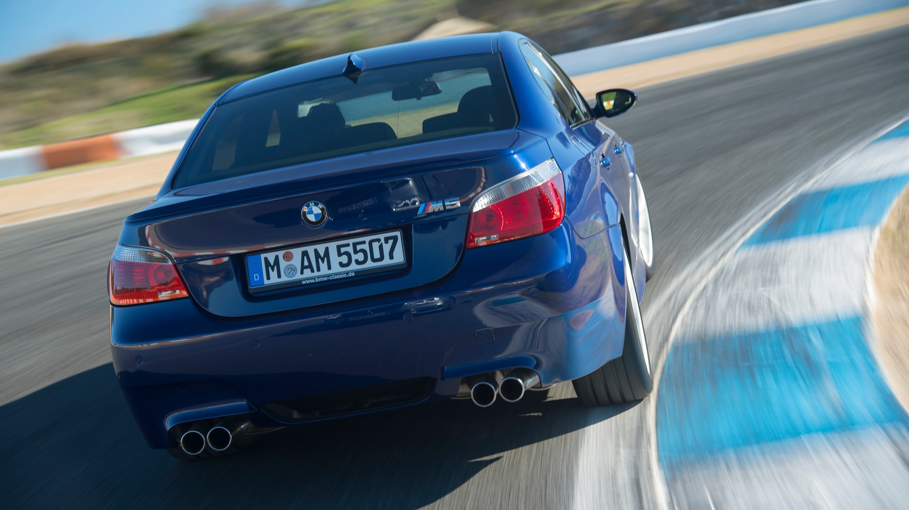
Революция в технологиях
В 2000-е годы борьба сместилась в область технологий. Mercedes активно внедрял электронные системы комфорта и безопасности (например, Distronic, PRE-SAFE, AIRMATIC), а BMW делал ставку на инновационные двигатели (Valvetronic, EfficientDynamics) и спортивную управляемость.
2010-е – 2020-е: электрификация и цифровизация
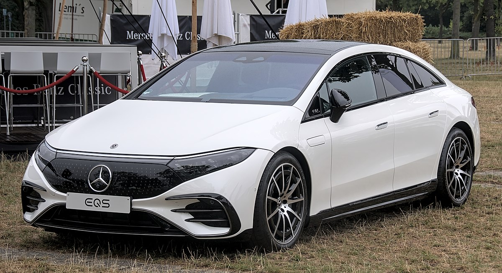 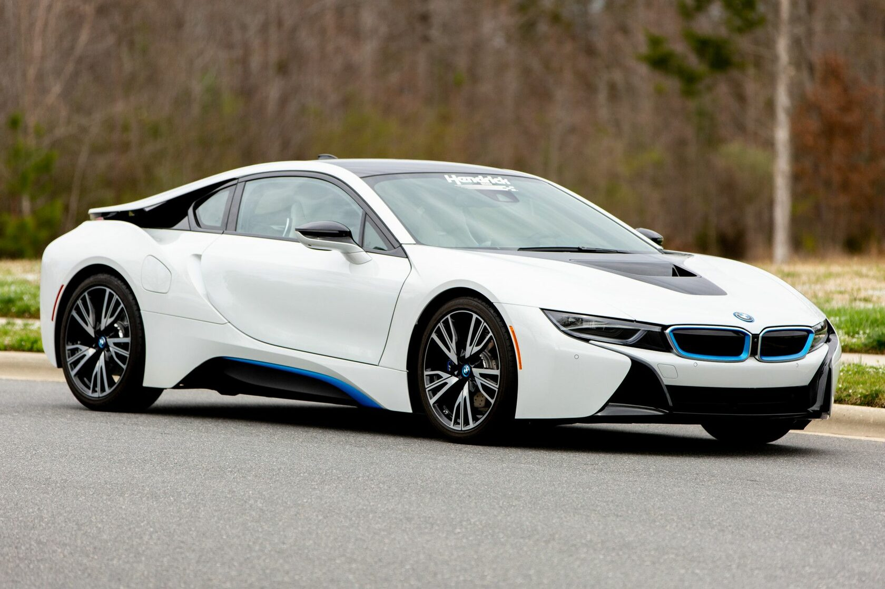
BMW i vs Mercedes EQ
BMW одним из первых в премиальном сегменте начал развивать электромобили, выпустив i3 и i8 в 2013 году. Mercedes-Benz сначала отставал, но затем представил линейку EQ (EQC, EQS, EQA), которая стала мощным конкурентом BMW i.
Автопилот и цифровые технологии
Обе компании активно развивают системы автономного вождения и цифровых сервисов. Mercedes-Benz первым представил MBUX с голосовым управлением, а BMW сделал ставку на новый iDrive и 48-вольтовую гибридную систему.
Mercedes-AMG vs BMW M сегодня
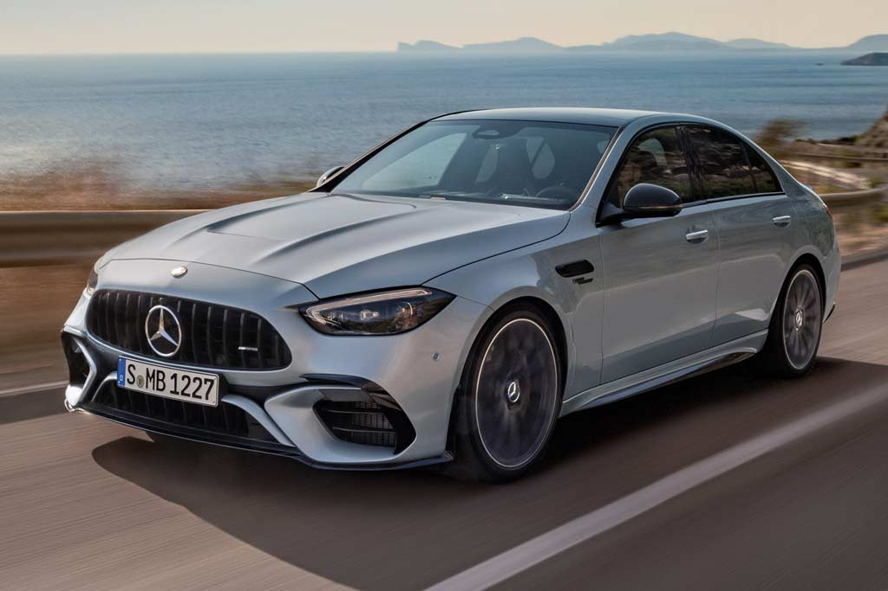 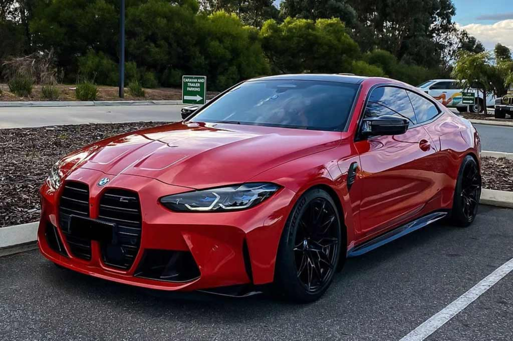BMW продолжает выпускать мощные и драйверские M-модели, включая M3/M4 с системой xDrive, а Mercedes отвечает новыми AMG с гибридной системой (например, AMG C63 с 4-цилиндровым PHEV на 680 л.с.).
Итог: два разных подхода
Конкуренция между BMW и Mercedes-Benz продолжается, и каждая компания придерживается своей философии:
- Mercedes-Benz — это про роскошь, статус, комфорт и технологии, предлагая максимально плавную и статусную езду.
- BMW — это про драйв, спортивность, мобильность, и управляемость, привлекая тех, кто хочет активного вождения.
Каждый новый виток технологий подогревает это соперничество, и фанаты двух брендов продолжают спорить, кто же лучше.